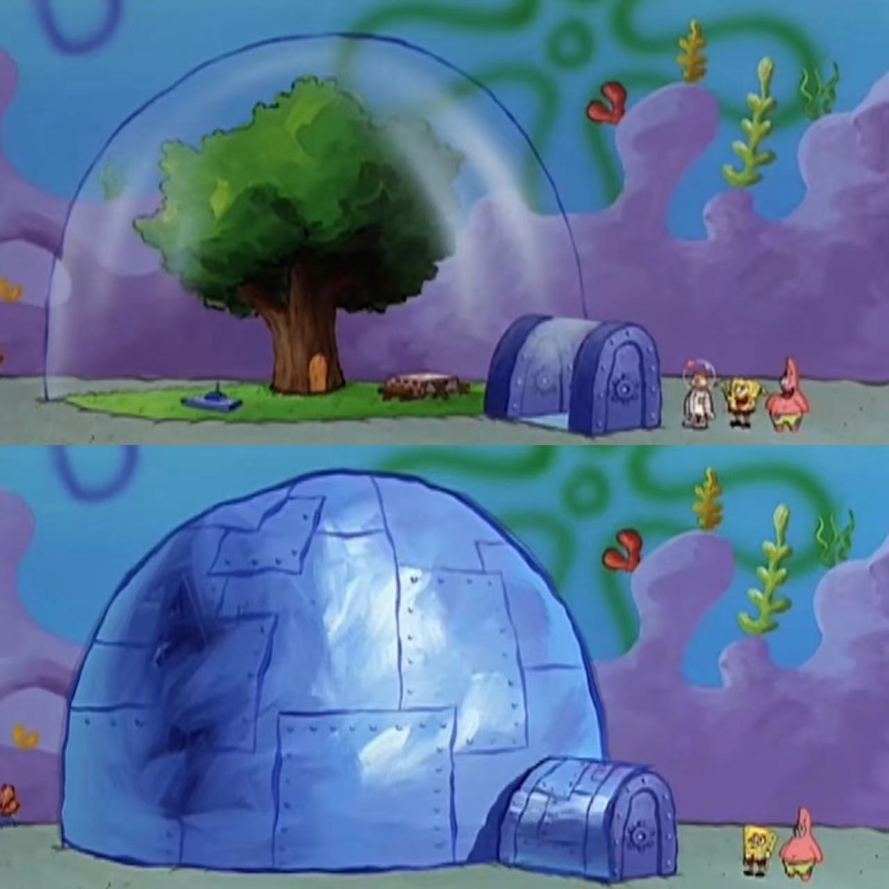

Chapter Four The Metaphor of Being Alien
Sandy Cheeks is a Texas squirrel, the only main character in SpongeBob SquarePants that comes from the surface (Sandy Cheeks 2023), which makes her an alien in Bikini Bottom. Therefore, she has to wear a diving suit and a helmet to survive underwater, except in her treedome. Sandy is a skilled, passionate scientist and inventor, as she builds her daily equipment, complicated machines, and even a rocket.
Sandy’s treedome implies her identity as an outsider. It is a unique habitat located in the underwater city, as it is filled with air rather than water, achieved by the its powerful, impenetrable airtight dome. Only when the sea creature wearing a special helmet that contains water can they breathe freely inside. The treedome’s landscape is characterized by a large oak tree in the center, which serves as her main living space, suiting the standard lifestyle of a squirrel. Functionally, it provides her with oxygen to live and acorns to eat. There is also a variety of equipment for leisure—a boxing ring, weightlifting gadgets, an exercise hamster wheel, and a rocket for the Moon that is usually kept underground. The landscape within the dome changes according to the season. During the winter, leaves would fall and snow would cover the ground. In the meantime, Sandy would sink a dormancy.
Fig. 5. Sandy’s Treedome
The dome has the ability to change its exterior. Sandy sets up a mechanism that could cover the whole building with a layer of riveted sheet metal when she feels like more privacy (Sandy Cheeks’ treedome 2023). Thus, the house becomes a manifestation of her emotions. Suffering from homesickness, Sandy encases the dome with metal plating in the episode “Texas (S01E18a)”. Later, she sings on the roof, “it’ s time for a tumbleweed to tumble long home,” which implicates her frustration and solitude of being the only outlier in the community. The fortress-like home is a metaphor of herself shutting down from the mainstream of the outside world.
In terms of appearance and capability, Sandy’s treedome resembles Biosphere 2, an experimental bioregenerative life support system constructed between 1987 and 1991 located in the United States. The aim of this project included creating operational models to enhance human’s comprehension of the Earth’s biosphere and ecosystem, establishing biospheres that facilitate human life support beyond the Earth’s environment, guaranteeing a superior standard life of living in harsh conditions, developing technologies that address pollution problems, and promoting the development of sustainable agriculture with high yield (Allen and Nelson 1999:16). Overall, Sandy’s treedome can be seen as an imitation of Biosphere 2, supported by the evidence that she is an expert in science and technology. In The Bikini Bottom’s Up Tour, it is also revealed that the construction of this place is with the assistance of her friends at NASA (Sandy Cheeks’ treedome 2023). There exists the projection of reality in that Sandy’s hometown, Texas, is known as one of NASA’s center for human for human spaceflight missions.

Fig. 6. Biosphere 2 (exterior)

Fig. 7. Biosphere 2 (interior)
Sandy’s life in underwater environment could be viewed as a metaphor of human’s life in space, who also necessitate an enclosed base to prevent them from suffocation and require special gears to go outside. In spite of being the alien in a harsh environment, the desire to explore the unknown has never stopped, both for Sandy and for human.